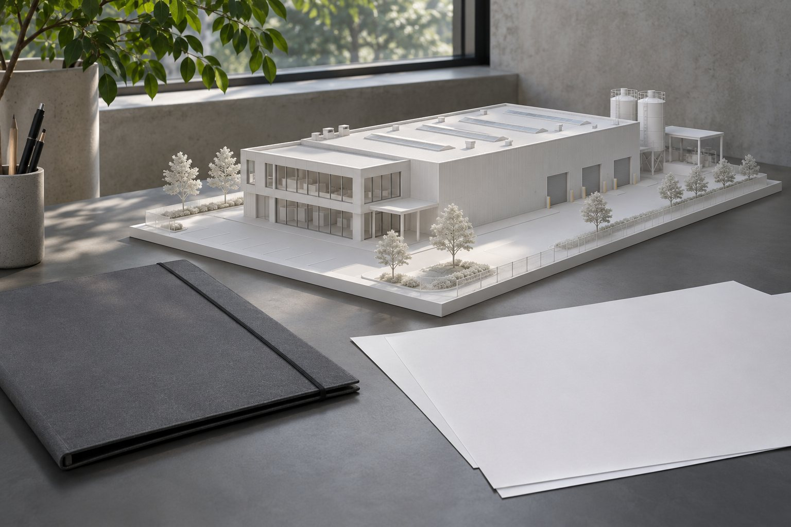

Развитие промышленной площадки / кейс-концепт
Один проект. Согласованные решения.
Связать площадку, экономику и запуск проекта.

Задача
У условного владельца есть идея небольшого производства и выбранная площадка. Технические вводные, расчёты и материалы для партнёров пока существуют отдельно. Нужно связать ограничения участка с финансовыми сценариями, а затем собрать понятный план дальнейших действий.
Что сделали
Проверяем площадку
Собираем доступные данные по сетям, мощностям и ограничениям.
Сводим экономику
Связываем технические вводные с инвестициями и сценариями модели.
Объясняем проект
Готовим презентацию для банка или инвестора и лендинг.
Планируем закупки
Собираем перечень закупок, зависимости и вопросы для уточнения.
Комплект для следующего решения
Материалы для обсуждения решения с партнёрами.
Инженерный аудит участка без проектной документации, финансовая модель, презентация, лендинг и план закупок. Пробелы исходных данных и допущения отмечаются в каждом документе.
Материалы пакета / примеры
Условные фрагменты показывают структуру передачи.
Аудит площадки
Электроснабжение: требуемая мощность уточняется. Технические условия не предоставлены. До оценки подключения запросить документы и подтвердить точку присоединения.
Финансовая модель
| Сценарий, пример | Базовый | Сдержанный |
|---|---|---|
| Выручка / месяц | 2,4 млн ₽ | 1,8 млн ₽ |
| Переменные затраты | 1,2 млн ₽ | 0,9 млн ₽ |
| Постоянные затраты | 0,8 млн ₽ | 0,8 млн ₽ |
| Операционный остаток* | 0,4 млн ₽ | 0,1 млн ₽ |
*Упрощённый пример до налогов, долга и инвестиций; не прогноз.
Презентация и лендинг
Тезис: «Производственная площадка под конкретный продукт». Подача: задача рынка, продукт, мощности, экономика и запрос к партнёру. Лендинг: описание продукта, параметры и форма запроса.
План закупок
Сначала подтвердить инженерные ограничения. Затем уточнить требования к оборудованию, собрать предложения и сравнить комплектацию. Сроки поставки вносятся после подтверждения поставщиком.
Контур проекта / пример
Демонстрационный фрагмент, не рабочая документация.
| Материал | Связь с решением |
|---|---|
| Аудит участка | Ограничения и вопросы по сетям |
| Финансовая модель | Сценарии инвестиций и расходов |
| Презентация | Логика проекта для партнёров |
| Лендинг | Публичное описание предложения |
| План закупок | Очередность и зависимости |
Исходные данные связаны
Пример логики: недостающие данные по мощности отмечены до расчёта подключения.
Этапы и срок
4–6 недель
- Неделя 1 · вводные и аудит
- Недели 2–3 · экономика
- Недели 3–5 · презентация и лендинг
- Недели 5–6 · закупки и передача
Ориентир по стоимости
380 000 ₽
Пакет не гарантирует кредит, инвестиции или разрешение на строительство. Обследования, проектная документация и согласования оцениваются отдельно.
Итоговый состав, срок и стоимость фиксируем после разбора исходных данных.